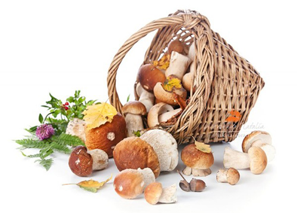

Для поиска нажмите "Ctrl+F"
Съедобные грибы
Лисички
Шляпка 2-8 см., выпуклая или плоская, к зрелости воронковидная, с тонким, часто волнистым краем, гладкая, яично- желтая. Мякоть плотная, резинистая, беловатая, с приятным запахом и вкусом. Складочки пластинковидные, толстые, с тупым краем, далеко нисходящие, с перемычками (анастомозами), одноцветные со шляпкой. Ножка 2-7x0,4-1,5 см., цилиндрическая, ровная, сплошная, одноцветная, со шляпкой, гладкая. Споры 8-10х4-6 мкм., эллипсоидальные, гладкие, бесцветные. Растет в различных лесах, преимущественно хвойных. Плодоносит в июле - октябре, часто большими группами. Обычный вид. Употребление: употребляется свежим, маринованным, соленым.
Дождевик
Плодовое тело 3-8х1-5 см. (внизу 1-2 см.), грушевидное или приплюснуто-головчатое, на верхушке с бугорком, внизу складчатое. Перидий белый, затем буроватый, снаружи из нежных, легко обламывающихся шипиков или бородавочек, внутри тонкий, напоминающий бумагу, сетчатый, буроватый. Глеба мягкая, нежная, с приятным запахом и вкусом, вначале белая, к зрелости желто-оливковая, пылящая спорами, разрыхленными неразветвленными нитями капиллиция. Споры 3-5 мкм., шаровидные, мелкобородавчатые, почти гладкие, светло-оливково-буроватые. Растет в лесах и на лугах среди трав, на гнилой древесине. Плодоносит в июне - сентябре, группами и поодиночке. Обычный вид. Употребление: съедобен, употребляется в молодом возрасте, свежим.
Белый гриб
Шляпка 6-20 см., полушаровидная, затем подушковидно-выпуклая, гладкая, иногда морщинистая или волокнистая, сухая или влажная, буроватая или коричнево-бурая. Трубочки глубоковыемчатые или приросшие, белые, затем желтовато оливковые или желтовато-зеленоватые, с мелкими округлыми порами.Мякоть плотная, крепкая, толстая, белая, с ореховым вкусом, без особого запаха. Ножка 4-10х2-5 см., вначале клубневидная, затем вытянутая, цилиндрическая, с расширением у основания, сплошная, белая или светло буроватая, с белым сетчатым рисунком в верхней части. Споры 10-17х4-6 мкм., веретеновидно-удлиненные, гладкие, оливково-буроватые. Растет преимущественно в еловых лесах. Плодоносит в июне - октябре, одиночно и группами. Обычный вид. Употребление: съедобен, употребляется сушеным (особенно ценный), маринованным, свежим, соленым.
Подосиновик
Шляпка 5-20 см., полушаровидная, затем выпуклая, бархатисто-волокнистая, сухая, темно-красная или красно-бурая. Мякоть толстая, плотная, белая на изломе грязно-лиловатая, затем черно-бурая, с приятным вкусом, без особого запаха.Трубочки выемчатые или свободные, длинные, белые, затем серовато буроватые. Ножка 5-22х1,5-3,5 см., цилиндрическая, равномерно расширенная к основанию, сплошная, белая, покрытая мелкими белыми, затем темно-бурыми чешуйками. Споры 10-20х4-5 мкм., веретеновидные, гладкие, охристо-буроватые. Растет в осиновых лесах. Плодоносит в июле - сентябре, одиночно и группами.
Рыжик
Шляпка 3-12 см., вначале выпукло-округлая, с завернутым вниз краем, затем воронковидная, оранжевая, с концентрическими более темными зонами. Мякоть хорошо развитая, плотная, оранжево-кремовая, с оранжевым млечным соком, зеленеющим на изломе, затем буреющим, неедкая, с характерным смолистым приятным запахом. Пластинки приросшие или слегка нисходящие, частые, толстые, оранжевые, при надавливании и на изломе буреющие. Ножка 3-6х1-3 см., цилиндрическая, полая, гладкая, оранжевая или оранжево-буроватая. Споры 7-9х6-7 мкм., широкоовальные, с притупленными бородавками, светло-кремовые. Растет в сосновых лесах, особенно в молодых посадках, среди травы. Плодоносит в августе - сентябре, одиночно и группами. Обычный вид. Употребление: съедобен, употребляется свежим, соленым.
Скрипица
Шляпка 7-25 см., вначале плоско-выпуклая, затем глубоковоронковидная, с завернутым вниз краем, тонкоопушенная, сухая, белая или желтоватая, без зон. Мякоть очень толстая и плотная, белая, с белым едким млечным соком, жгуче-едкая, без особого запаха. Пластинки коротко-нисходящие, беловатые, затем охристо-желтоватые, средней частоты, часто наклоненные. Ножка 2-7х2-4 см., короткоцилиндрическая, сплошная, беловатая или слабо-желтоватая, при надавливании светло-охристо-рыжеватая, гладкая. Споры 8-9х7-8 мкм., почти шаровидные, мелкобородавчатые, бесцветные. Растет в различных лесах, особенно часто в еловых. Плодоносит в июле - сентябре, группами и одиночно. Обычный вид. Употребление: съедобен, употребляется соленым.